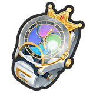

¿Qué es Puni Puni?
Yo-kai Watch Puni Puni es el juego de puzles para móvil de Level-5. Unes punis del mismo yokai para eliminarlos, cargar el ataque especial de tu equipo y derrotar a los jefes de cada evento.
Cada yokai pertenece a una tribu, tiene un rango que fija su nivel máximo y unas habilidades propias. Elegir bien a los cinco yokais del equipo, el que va en el centro y el reloj marca la diferencia en los eventos difíciles. Esta web reúne esa información en español y te deja probar equipos antes de jugarlos.
En cifras
Secciones
📖
Base de datos de yokaisTodos los UZ, UZ+ y UZ++ con buscador, filtros por tribu, rango y saga, y la ficha de cada uno.Ver yokais →

🎪
EventosCómo funciona un evento: formatos, energía, Puntos Y, jefes, liga semanal y estrellas.Ver eventos →
🧮
MecánicasTribus, efecto de tribu, unity, dupes, rangos, center skill y la fórmula de las stats.Leer la guía →
🗺️
Guías externasEnlaces a guías de la comunidad: ligas, eventos, zonas, sellos legendarios y más.Ver guías →
⚔️
Team BuilderArma tu equipo de 5, ajusta dupes y reloj y mira el PV y ATQ final al momento.Crear equipo →
Últimos UZ añadidos
Los yokais más recientes de cada rango en la base de datos.